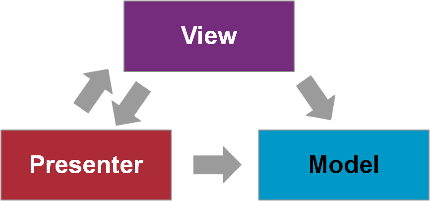
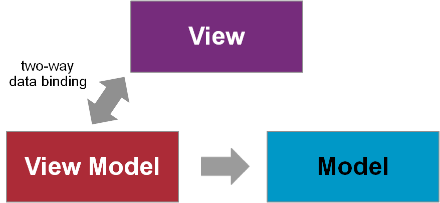
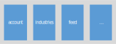
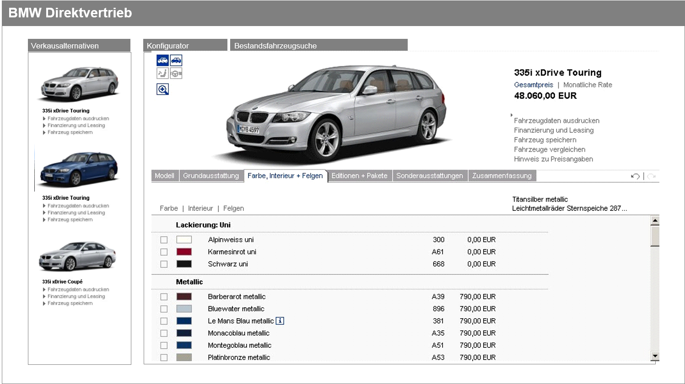
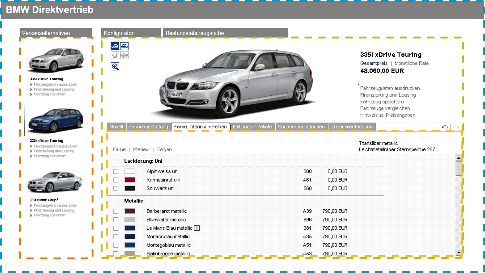
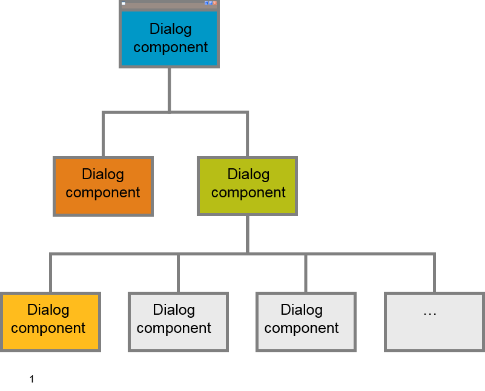
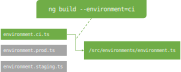
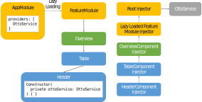
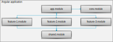

Web Application Architecture
Philip Schmökel, Tim Lüecke, Marek Matczak
Client Infrastructure
(a.k.a. TI-Architecture)
Pageload-centric web applications
... are the predominant architecture of the past.

The content of each web page is fully rendered on the server.
Each action requires a round trip to the server which contains presentation logic and application state.
Single Page Applications

A page's content is retrieved with a single page load.
The page does not reload any more.
Client Architecture
(a.k.a. T-Architecture)
Model View Controller
Model View Presenter
Model View View Model
CQRS / Event Sourcing
... commonly called Reactive Architecture or Flux

But is this really sufficient for building large scalable applications?
... here are a few questions.
How to structure huge applications?
How is the data converted from model to view?
Where does Internationalization happen?
What about validation of user input?
How does the client talk to the application core?
What about dialog states and widget states?
What about states that are dependent on other states?
How to design state controlling if an action can be executed or not?
How does the model look exactly?
Projects gone wrong. Let's look at a few examples.
It's done! Does it work in IE? Err... Avoid rolling your own if there is a library!
Browser tab grows to 2GB, unresponsive script warnings. Dialogs were not unloaded.
Unlimited loading of data to the client. Do paging, filtering, sorting, and grouping on the server side!
Mass manipulation in the DOM caused unnecessary rendering of intermediate results (forced reflow). Render at the end!
Methods reused at the wrong level cause duplicate calls and performance issues. Event listeners triggering new events are hard to debug. Avoid!
Let's step back
What we are trying to achieve, is a maintainable and performant client.
For that we need to handle its static and dynamic complexity.
Static complexity comes in two dimensions
- Functional complexity
- Technical complexity
Dynamic complexity needs to consider
- Amount of processed data
- Granularity of backend calls
- Target Platform/Browser
- UI Frameworks to be used
- ...
Handling Functional Complexity
Split applications into functional components handling a specific functional concern.
Entering component-oriented architecture
A Component?
Features of components
- Providing services to other components via interfaces
- Depends on other components by importing their services
- Encapsulated: implementation can be replaced
- Element of reuse
- Composed of other components (composition hierarchy)
- Feasible unit of construction, implementation and planning
On the client components are called dialogs.
How do we handle dialogs like this?
Functional decomposition into dialog components
 Car configurator could then be reused for public website.
Handling Technical Complexity
Technical Tasks of a client
- Displaying the user interface
- Displaying (business) data
- Accepting user input
- Controlling the dialog and dialog flow
- Validating of user input
- Controlling the presentation state
- Calling the server for logic
devonfw Client Meta Architecture

Dialog Container Architecture
The container is responsible for the configuration, lifecycle-management and bootstrapping of the dialogs and client application.

Mostly provided by framework, but might need to be extended.
Dialog Components

Dialog components interact by either embedding each other or forwarding the control flow to each other.
devonfw Dialog Component Meta Architecture

This meta architecture maps to MVC, MVP, MVVM...
The devonfw Client Architecture is a meta-architecture for architectures based on a concrete framework:
- serving as a blueprint for checking completeness
- providing a stable orientation
Now let's move to Angular...
... and see the different concepts in action.
devon4ng Architecture
Based on Angular
- Implementation of meta-architecture based on Angular
- Taking over the Angular best practices
- Filling the gaps where needed
Mapping the Dialog Container...
Angular Configuration Management
Definition
"environmentSource": "environments/environment.ts",
"environments": {
"dev": "environments/environment.ts",
"ci": "environments/environment.ci.ts",
"staging": "environments/environment.staging.ts",
"prod": "environments/environment.prod.ts"
}
angular.json
Angular Configuration Management
Usage
// Import Statement
import { environment } from '../../../environments/environment';
// Usage
this.http.get<Flight[]>(environment.backendUrl + '/flights');
The import statement does not change when changing the environment.
Angular Component Lifecycle

Angular Dialog / Dependency Management
When Angular compiler creates HeaderComponent injectors are asked until the dependency can be found or root injector can not handle
Angular Modules help to structure the client
core.module contains shared services.
share.module contains shared components.
A feature module encapsulates dialog components and functionality of one business domain.
Note: Multiple dialog components can be part of a feature module.
The Angular Component Tree


A Dialog Component is typically an Angular toplevel component, that is activated by a route.
Dialog Components


A must-know pattern: Smart vs Dumb Components
| Smart Components | Dumb Components |
| contain the current view state | show data via `@Input` binding and contain no view state |
| handle events emited by _Dumb Components_ | pass events up the component tree to be handled by _Smart Components_ (`@Output`) |
| subscribe to application state from stores | never use stores |
| consists of n _Dumb Components_ | is independent of _Smart Components_ |
A _Smart Component_ is typically a toplevel dialog
- a component that can be routed to
- a modal dialog
- a component which is placed inside AppComponent